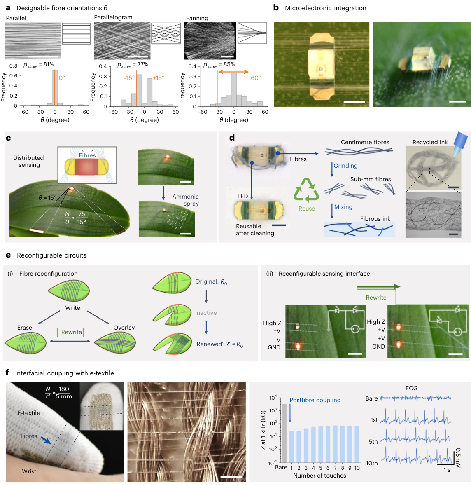

问题
活体表面需要电子功能，但连续塑料基底会影响触觉、透气、汗液/气体交换和生命周期环境成本。
这篇论文提出一种 orbital spinning 方法，把 PEDOT:PSS 基有机生物电子纤维原位 tether 到皮肤、鸡胚和植物表面。核心不是做一块更薄的贴片，而是去掉连续基底，用开放纤维网络实现几乎无感的电子增强。
传统柔性电子依赖薄膜基底，舒适性、透气性和可持续性仍受限制；传统纤维/织物虽透气，却难以在活体表面即时形成高功能图案。本文把 OMIEC 材料、微纤维形态和原位制造合并成一种 living interface。
活体表面需要电子功能，但连续塑料基底会影响触觉、透气、汗液/气体交换和生命周期环境成本。
用 PEDOT:PSS、透明质酸和 PEO 的水相墨水，通过 orbital spinning 在目标表面原位拉出开放纤维网络。
论文展示指尖 ECG/EMG 电极、皮肤门控 OECT、触觉增强、植物氨气警示、纤维修复/升级/回收等多场景演示。
本页使用你提供的 PDF 裁剪 Fig. 1-5，并发布到当前 GitHub Pages 站点。
Fig. 1 建立“无感增强”的设计目标；Fig. 2 证明 orbital spinning 能控制纤维生成、变形和 tethering；Fig. 3 验证皮肤电极的电生理能力；Fig. 4 展示无基底双面开放网络带来的触觉和 OECT 接口；Fig. 5 则把纤维网络扩展到植物、LED 耦合、修复和重构。
Fig. 1 把问题从材料导电性拉回到活体界面：纤维数量密度、方向和材料模态都要可定制；纤维要贴合从微米到毫米尺度的生物表面起伏；网络还要能在原位重构、升级和局部修复。
Fig. 2 是制造机制图：纤维从水相黏弹性溶液中被拉出，绕目标物体沉积，并通过目标边界和运动产生 tethering。纤维间距决定透明度，论文报告低密度网络可接近 98% 透过率。
Fig. 3 检验 on-skin electrode 的核心性能：纤维沿指纹脊线覆盖，随着沉积时间增加接触阻抗下降，并可采集 ECG/EMG 信号。耐摩擦、办公使用和短时水冲洗测试说明它不是只在静态照片里成立。
Fig. 4 展示 substrate-free 结构的真正优势：纤维两面都暴露，所以可以通过接触另一个人的皮肤采集双人 ECG；也能把皮肤本身作为 gate，形成 skin-gated OECT；还可以配合彩色 pH 响应纤维做 mist / pH 双模态触觉增强。

Fig. 5 把纤维网络用作微 LED 连接和植物叶片传感界面。PEDOT:PSS 对氨气等环境暴露产生电阻变化，可调节 LED 亮度；湿润区域又能选择性擦除纤维，使界面可以写入、擦除、覆盖和重构。
它不是超表面论文，但它把 PEDOT:PSS/OMIEC 从器件通道推进到活体表面可制造网络。对 OECT/OMIEC × 可重构超表面方向，真正可借鉴的是三点：第一，材料态可以和生物表面拓扑一起设计；第二，开放网络减少了基底对宿主功能的遮挡；第三，可擦除、可修复、可升级的界面逻辑，很适合作为未来可重构、可维护的传感-计算-显示表面。
常用有机混合离子-电子导体，兼具导电性、可加工性和生物电子应用基础。
绕目标物体轨道式拉丝/沉积，让目标边界引导纤维 tethering 和图案形成。
不是完全看不见，而是尽量不妨碍触觉、透气、形变和宿主生理功能。